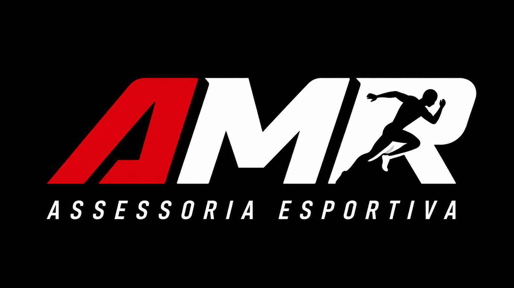
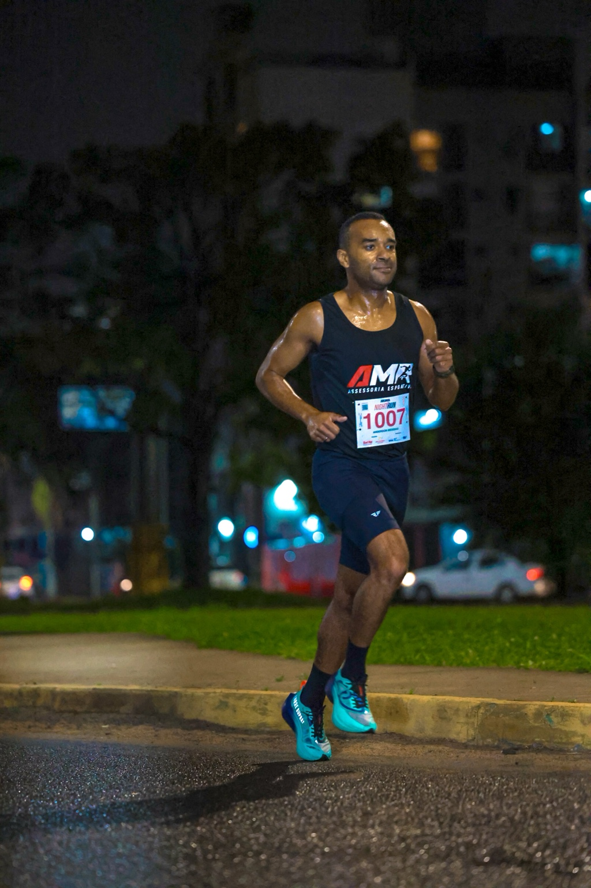
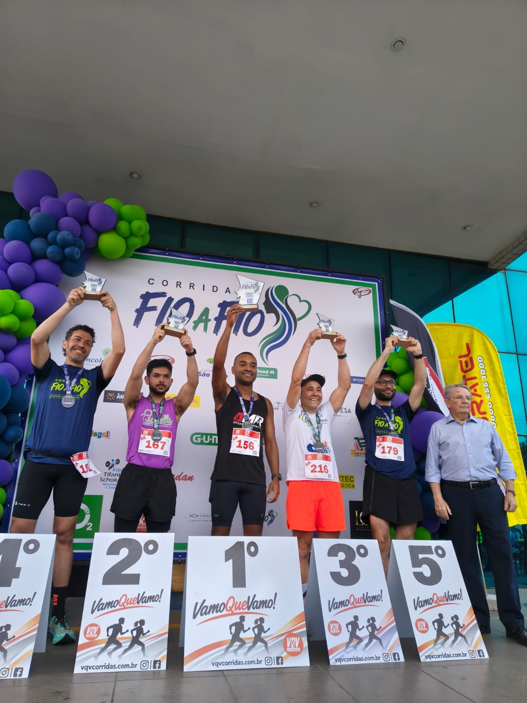
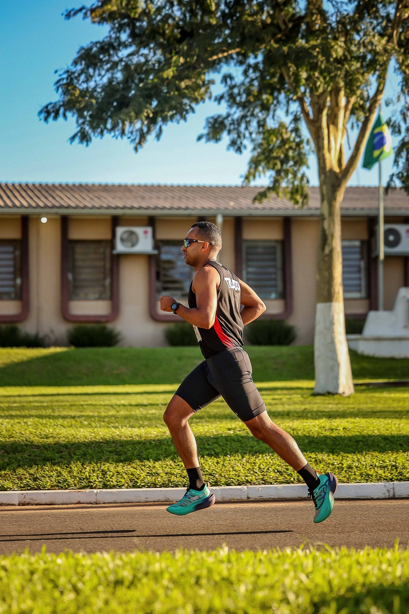
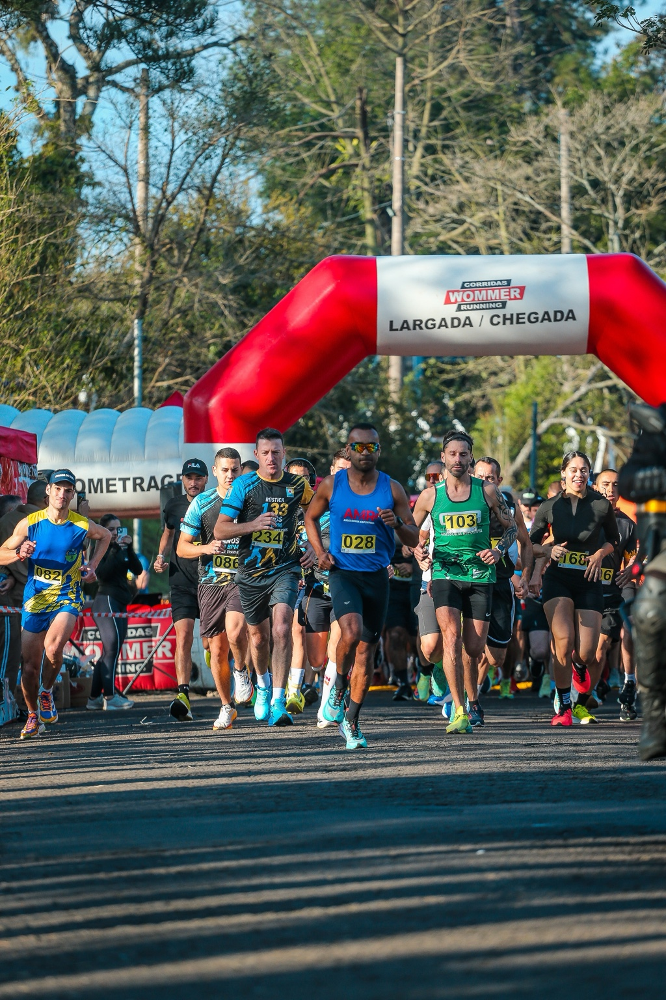

Avaliação
Entendemos seu nível, objetivo, rotina e histórico.

AMR ASSESSORIA ESPORTIVA • ONLINE E PRESENCIAL
Treinamento individualizado para quem busca saúde, evolução e alta performance — dos 3 km aos 42 km.

COMO TRABALHAMOS
Cada atleta começa de um ponto diferente. Por isso, o processo da AMR combina avaliação, planejamento, execução e acompanhamento contínuo.
Entendemos seu nível, objetivo, rotina e histórico.
Treinos estruturados a partir das suas zonas e metas.
Treinos enviados pelo aplicativo, com orientação clara.
Análise da evolução e ajustes para manter consistência.
SERVIÇOS
Da saúde à alta performance, o treinamento é organizado de acordo com o objetivo e a realidade de cada atleta.
Periodização de acordo com seu objetivo, disponibilidade e nível.
Intensidades para resistência, ritmo, velocidade e potência.
Fortalecimento específico para melhorar desempenho e suporte ao treino.
Acompanhamento adaptado à sua rotina.
Preparação para diferentes distâncias e desafios.
Concursos, CTSP Brigada Militar e cursos operacionais.
PERFORMANCE
Fartlek, intervalados, ritmados, longões, velocidade, resistência e força — cada estímulo tem uma função dentro do planejamento.
TAF • CONCURSOS • CURSOS OPERACIONAIS
Estratégia e especificidade para as demandas físicas do seu teste, com foco em corrida e condicionamento.
FALAR SOBRE O TAFAMR NA PRÁTICA
Treinos, provas, experiências e evolução fazem parte do caminho.



O TREINADOR
Treinador, corredor e responsável pela AMR Assessoria Esportiva. Um trabalho baseado em método, experiência prática, acompanhamento e estratégia para transformar cada sessão em evolução.
“Treinar com propósito é saber por que cada treino está sendo feito.”
AMR NA PRÁTICA
Do primeiro treino à linha de chegada: estratégia, constância e acompanhamento para construir resultados sustentáveis.
CONECTE SEUS TREINOS
Acompanhe seus treinos com as principais plataformas e dispositivos.
PRONTO PARA COMEÇAR?
Escolha seu objetivo. A AMR cuida da estratégia.
QUERO TREINAR COM A AMR